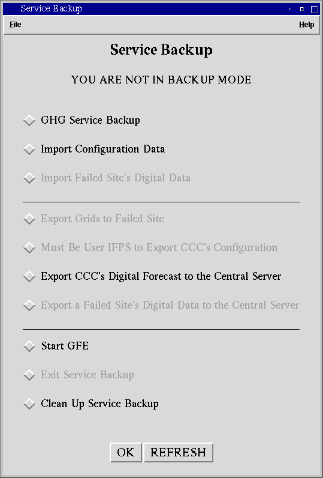
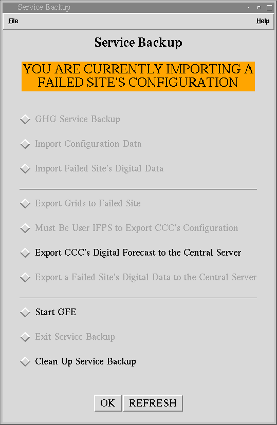
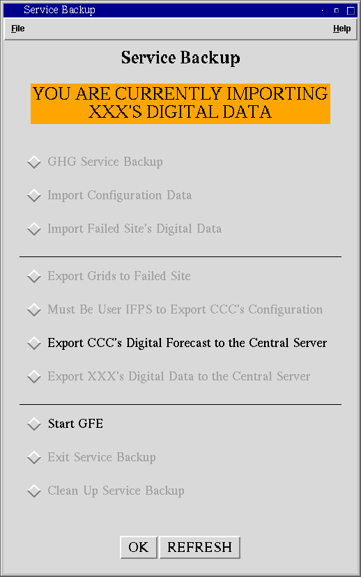
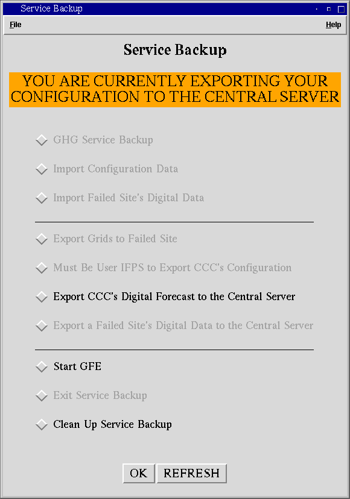
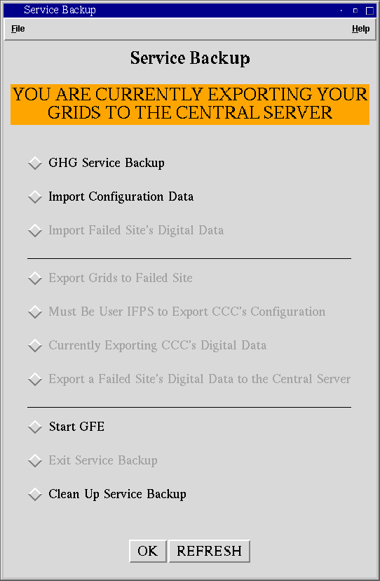
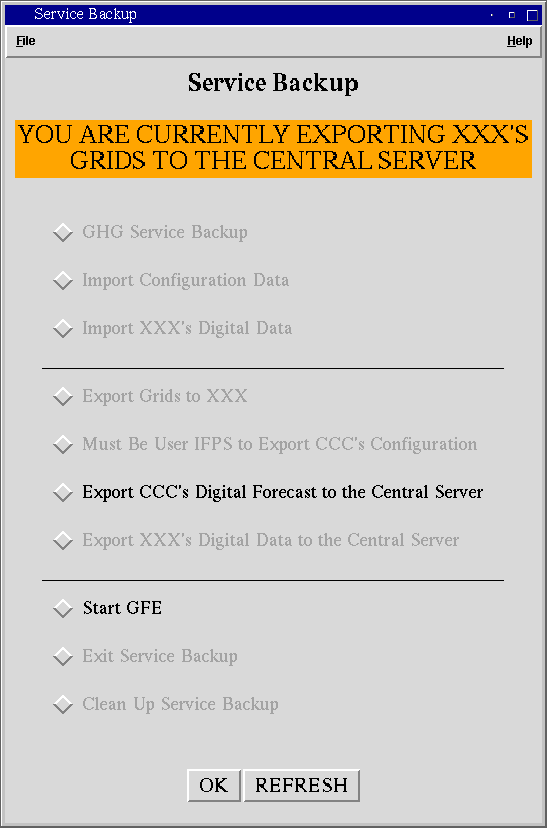

Service Backup GUIHELP |
GHG SERVICE BACKUP [BACK TO THE TOP]
This button will allow you to start another site's GFE after downloading their configuration. Before you are allowed to start the failed site's GFE, check_svcbu.bat will run to check for any service backup files that may cause problems. If any files are found, you will be prompted to clean up. If you do not clean up, you will not be allowed to continue, since serious errors may occur (server not starting, text products not working, etc.). If no service backup files are found, you will be asked for the failed site's ID. Once the failed site's configuration is downloaded and the server is started, the failed site's GFE will start. At this time, you will be able to create the Hazards grids for the failed site. NOTE: You should not create any other grids at this time. You must first import the failed site's grids in order to perform a full service backup.
IMPORT CONFIGURATION DATA [BACK TO THE TOP]
This button will allow you to import another site's configuration data. Before you are allowed to import, check_svcbu.bat will run to check for any service backup files that may cause problems. If any are found, you will be prompted to clean up. If you do not clean up, you will not be allowed to continue, for errors may occur. If no files are found or once the files are cleaned up, you will be asked if you would like to also import the failed site's digital data and/or start their GFE after the import is finished. Make your choice and select OK.
This button will be disabled while you are in the process of importing a site's configuration or digital data. It will be enabled at all other times.
IMPORT FAILED SITE'S DIGITAL DATA [BACK TO THE TOP]
This button will also be called "IMPORT CCC's DIGITAL DATA" when you are in service backup mode. It will allow you to import the digital data of the site specified in the title (CCC in this example). You will also be asked if you would like to start GFE for the failed site once the import is finished. Make your choice and select OK.
This button will only be enabled after you have successfully imported the failed site's configuration. It will be disabled while you are importing a failed site's configuration or digital data or are not in service backup mode.
EXPORT GRIDS TO FAILED SITE [BACK TO THE TOP]
This button will also be called "EXPORT GRIDS TO CCC" when you are in service backup mode. It will allow you to export the digital data back to the failed site (CCC in this example).
This button will only be enabled after you have successfully imported the failed site's configuration. It will be disabled while you are importing a failed site's configuration or digital data or you are not in service backup mode.
EXPORT CCC'S CONFIGURATION TO THE CENTRAL SERVER [BACK TO THE TOP]
This button will allow you to export your own configuration (CCC's in this example) to the central server for service backup.
This button will only be enabled when you start the GUI as user ifps and are not in service backup mode. If you start the Service Backup GUI as any other user, the button label will read "Must Be User IFPS to Export CCC's Configuration".
EXPORT CCC'S DIGITAL FORECAST TO THE CENTRAL SERVER [BACK TO THE TOP]
This button will allow you to export your digital data (CCC's in this example) to the central server for service backup.
This button will be enabled whenever you are not currently exporting your digital forecast to the central server.
EXPORT A FAILED SITE'S DIGITAL DATA TO THE CENTRAL SERVER [BACK TO THE TOP]
This button will allow you to export a failed site's digital data to the central server. (NOTE: You still need to export the digital data back to the failed site.)
This button will be enabled after you have successfully imported the failed site's configuration. It will be disabled while you are exporting configuration or digital data or while you are not in service backup mode.
This button will allow you to start GFE for a specified time. If you are in service backup mode or have multiple domains at your site, you will be asked what domain you would like to start service backup for. Otherwise, GFE will start for your site only.
This button will be enabled at all times.
EXIT SERVICE BACKUP [BACK TO THE TOP]
This button will also be called "EXIT SERVICE BACKUP FOR CCC" while you are in service backup mode. It will allow you to clean up the failed site's configuration (CCC in this example) and will close the Service Backup GUI when finished.
This button will only be enabled while you are in service backup mode.
CLEAN UP SERVICE BACKUP [BACK TO THE TOP]
This button will allow you to clean up a failed site's configuration. If you are in service backup mode, it will clean up the configuration of the failed site. If you are not currently in backup mode, then you will be prompted for the site ID that you wish to clean up.
This button will be disabled while you are importing a failed site's digital data.
This button perform the selected action. It will stay depressed until the selected action is finished.
This button will refresh the banner message (if necessary) and will enable/disable the necessary buttons. It will also unselect any button.
YOU ARE NOT IN BACKUP MODE [BACK TO THE TOP]

This banner will appear if you are not in service backup mode. At this time, only the following buttons will be enabled:
EMERGENCY GFE (GHG ONLY)
IMPORT CONFIGURATION DATA
EXPORT CCC'S CONFIGURATION TO THE CENTRAL SERVER (if the GUI is started as user ifps)
EXPORT CCC'S DIGITAL FORECAST TO THE CENTRAL SERVER
START GFE
CLEAN UP SERVICE BACKUP
YOU ARE CURRENTLY IMPORTING A FAILED SITE'S CONFIGURATION [BACK TO THE TOP]

This banner will appear while you are in the process of importing a failed site's configuration from the central server from another Service Backup GUI. At this time, only the following buttons will be enabled:
EXPORT CCC'S DIGITAL FORECAST TO THE CENTRAL SERVER
START GFE
CLEAN UP SERVICE BACKUP
WAITING FOR A FAILED SITE'S SERVER TO START [BACK TO THE TOP]
This banner may also read "WAITING FOR XXX'S SERVER TO START" It will appear while you are waiting for a failed site's server (xxx's in this example) to start. At this time, only the following buttons will be enabled:
EXPORT CCC'S DIGITAL FORECAST TO THE CENTRAL SERVER
START GFE
YOU ARE CURRENTLY IMPORTING A FAILED SITE'S DIGITAL DATA [BACK TO THE TOP]

This banner may also read "YOU ARE CURRENTLY IMPORTING XXX'S DIGITAL DATA." It will appear while you are importing a failed site's digital data (xxx's in this example). At this time, only the following buttons will be enabled:
EXPORT CCC'S DIGITAL FORECAST TO THE CENTRAL SERVER
START GFE
YOU ARE CURRENTLY BACKING UP XXX [BACK TO THE TOP]

This message will appear while you are in service backup mode for a failed site (XXX in this example). At this time, the following buttons will be enabled:
IMPORT CONFIGURATION DATA
IMPORT XXX'S DIGITAL DATA
EXPORT GRIDS TO XXX
EXPORT CCC'S DIGITAL FORECAST TO THE CENTRAL SERVER
START GFE
EXIT SERVICE BACKUP FOR XXX
CLEAN UP SERVICE BACKUP
EXPORTING GRIDS BACK TO XXX [BACK TO THE TOP]

EXPORT CCC'S DIGITAL FORECAST TO THE CENTRAL SERVER
START GFE
YOU ARE CURRENTLY EXPORTING YOUR CONFIGURATION TO THE CENTRAL SERVER [BACK TO THE TOP]

This message will appear when you are exporting your configuration to the central server for service backup. At this time, the following buttons will be enabled:EXPORT CCC'S DIGITAL FORECAST TO THE CENTRAL SERVER
START GFE
CLEAN UP SERVICE BACKUP
YOU ARE CURRENTLY EXPORTING YOUR GRIDS TO THE CENTRAL SERVER [BACK TO THE TOP]

This message will appear when you are exporting your grids to the central server for service backup. If you are not in service backup mode, the following buttons will be enabled:IMPORT CONFIGURATION DATA
START GFE
CLEAN UP SERVICE BACKUP
If you are in service backup mode, the following buttons will be enabled:
IMPORT CONFIGURATION DATA
IMPORT CCC'S DIGITAL DATA
EXPORT GRIDS TO CCC
EXPORT CCC'S DIGITAL DATA TO THE CENTRAL SERVER
START GFE
EXIT SERVICE BACKUP FOR CCC
CLEAN UP SERVICE BACKUP
YOU ARE CURRENTLY EXPORTING XXX'S GRIDS TO THE CENTRAL SERVER [BACK TO THE TOP]

This message will appear while you are exporting a failed site's grids to the central server. At this time, the following buttons will be enabled:
EXPORT CCC'S DIGITAL FORECAST TO THE CENTRAL SERVER
START GFE